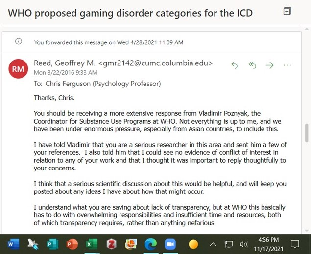

英雄は裁かれない，アイドルはう◯ちをしない，医者は常に正しい

象徴・権威に盲信する（あるいはおもねる）側にとって医者を含む「専門家」は最後の牙城に見える。 でも，たとえば2000年前後の BSE (通称：狂牛病) を巡るアレコレは今から見れば失笑1 ものだし，それをそのまま持ち越したような SARS-CoV-2 ウイルス騒ぎは現在進行形で続いている。
最近では「ゲーム障害」あたりか。 某専門家がゲーム障害の根拠となるものを WHO に問い合わせたら WHO は根拠を示せず，更に Web 上の解説ページを削除してしまったという笑えない笑い話がある。
しかも，この話には続きがあるそうで ICD-11 作成メンバのひとりが，アジアからゲーム障害を ICD-11 に盛り込むよう圧力を受けたと言ってるらしい。 もし本当なら，これはもはや国際政治問題と言える。

ここで「ゲーム障害」を巡る議論についてアレコレ言うつもりはないが2，「医はサービス」などと言われる昨今，サービスを維持するために需要（＝病気）を掘り起こすなんてのはいかにもありそうな話だし，テレビなんかで脅迫まがいの「健康情報番組」を見かけるたびに「そうであってもおかしくない」と思ってしまうのは仕方のないことである（笑）
斎藤環さんがゼロ年代に書かれた『思春期ポストモダン』の7章に以下のような記述がある3。
あるいはまた、「治療者」や「治療環境」、ないし「治療文化」といった存在もまた、時に病因論的ドライブを強化することがある。たとえば、ゆきすぎた医療化が広い意味で医原性と言いうるような問題をもたらしている場合、医療化そのものが病因論的に作用していると考えられる。このような場合にはもちろん、治療者自身から治療という発想に至るまで、なんらかの変化や改革が期待されることになるだろう
つまり医者と呼ばれる専門家の方々も自身が権威として振る舞うあるいは扱われることに慎重な態度をとっているわけで，それは私が常日頃から関わっている医院のかかりつけ医や病院の担当医の態度を見ても窺える。
私は昔から「専門家不全症」を唱える不遜な人間である。 といっても専門家自身が悪いわけではない。 専門家が自身の帰属するドメインを超えて「接続」できないのは仕方のないことと思っている。 でも，その結果として何が起こるかというと，私達は「都合のいい専門家」を好きにチョイスできるようになった。
実は因果が逆なのである。
「コロナ陰謀論」を推したいならソレを唱える専門家をチョイスすればいい。 マスクが嫌なら「マスクなど無駄」と言う専門家をチョイスすればいい。 ワクチン接種をしたくないなら「反ワクチン」を推進する専門家をチョイスすればいい。 「ゲーム障害」という名目で市民活動を規制したいなら「ゲーム障害」を病気と見なす医者をチョイスすればいいのだ。
それが何の専門家で，言ってる内容が正しいかどうかは関係ない。 必要なのは「専門家が言った」という権威性（お墨付き）である。
専門家だって間違うし思い込みをすることもある。 中身は同じ人間だもの。 でも，同じ専門知識のバックグラウンドを持つ人たち同士で議論することで「真理」に近づくことはできる。 本来であればそのプロセスこそが重要なのである。 前後の議論をすっ飛ばして主張の上澄みだけを利用するのは悪手だ。
物語の英雄は裏面から見れば虐殺者で簒奪者だ。 アイドルだって恋愛するし排泄もする。 じゃあ「医者」は？
ブックマーク
参考図書

- 思春期ポストモダン 成熟はいかにして可能か
- 斎藤環 (著)
- 幻冬舎 (Release 2013-05-31)
- Kindle版
- B00CZCW9BE (ASIN)
- 評価
終わらない思春期の2つのモードについて。

- ヒトラーと哲学者: 哲学はナチズムとどう関わったか
- イヴォンヌ シェラット (著), 三ッ木 道夫 (翻訳), 大久保 友博 (翻訳)
- 白水社 2015-01-22
- 単行本
- 4560084122 (ASIN), 9784560084120 (EAN), 4560084122 (ISBN)
- 評価
ナチス・ドイツ時代の哲学史物語という感じ。哲学（者）がヒトラーおよびナチス・ドイツにどのような影響を与えたか，またヒトラーおよびナチス・ドイツが哲学（者）にどのような影響を与えたかを物語風に編み上げていく。

- 万物理論 (創元SF文庫)
- グレッグ・イーガン (著), 山岸 真 (翻訳)
- 東京創元社 2004-10-28
- 文庫
- 4488711022 (ASIN), 9784488711023 (EAN), 4488711022 (ISBN)
- 評価
グレッグ・イーガンの名作。これも singularity を巡る物語だな。

- SAVED. ／ Be mine!
- 坂本 真綾 (メインアーティスト)
- FlyingDog 2014-02-05 (Release 2014-02-05)
- MP3 ダウンロード
- B00HY73M16 (ASIN)
- 評価
「世界征服〜謀略のズヴィズダー〜」OP曲。万能感溢れるノリのいい曲である（笑）